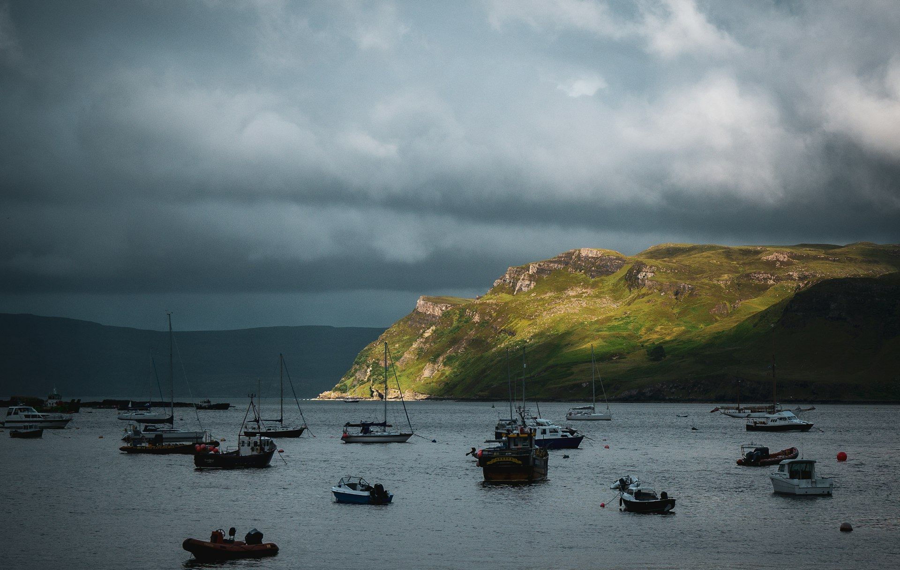
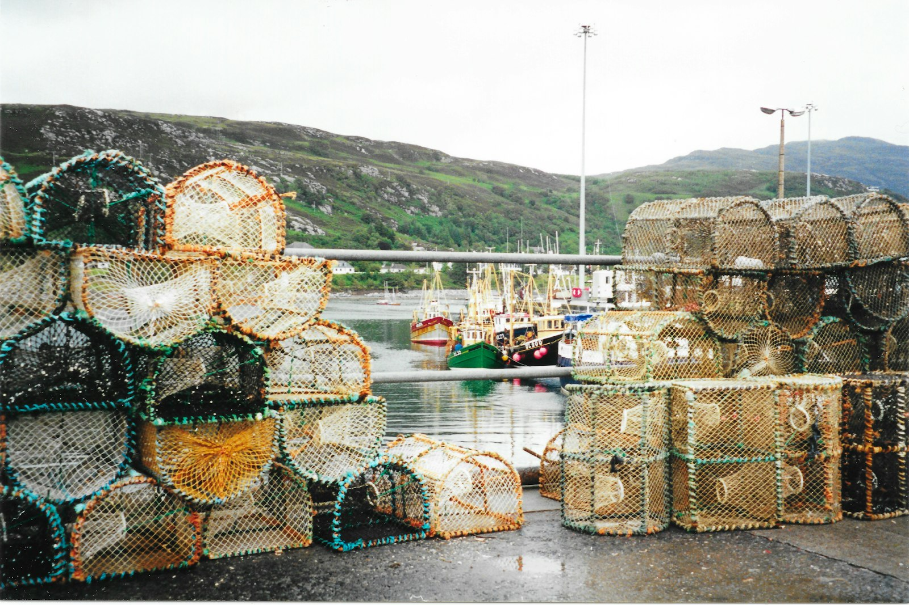
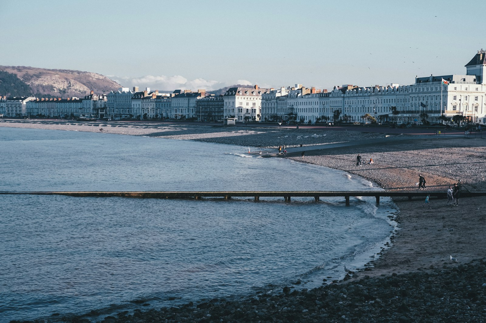
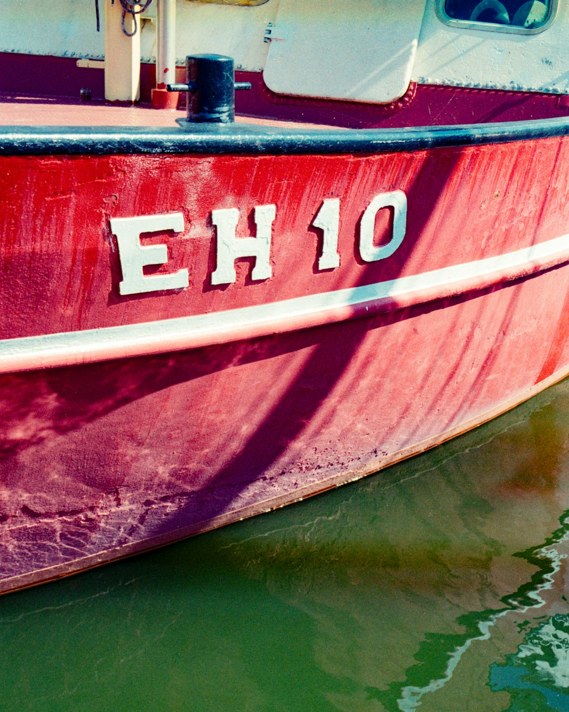
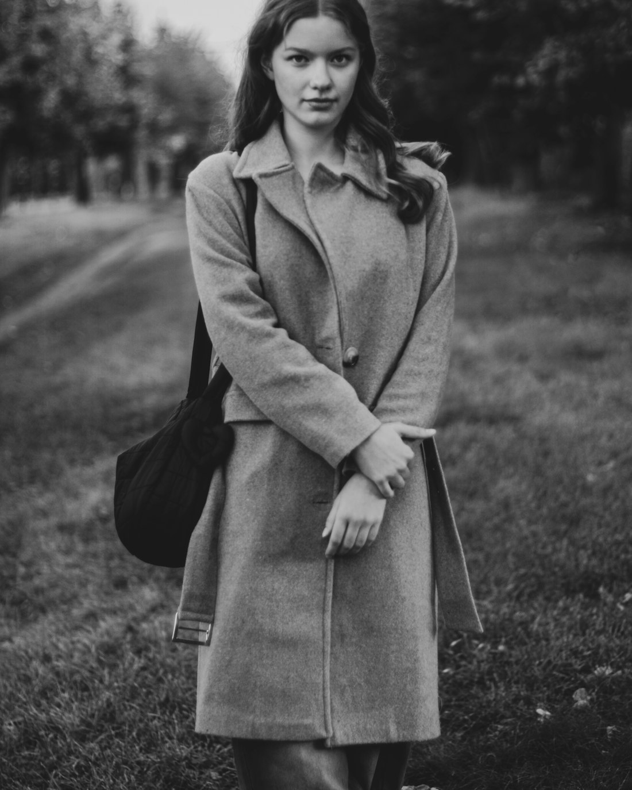

Erin
Calder
Documentary photographer on the working coast of east Scotland: harbours that still fish, resorts out of season.
Selected work
Long-term documentary projects on the Fife coast, alongside editorial commissions for magazines and weekend supplements.



About
I'm Erin Calder, a documentary photographer based in the East Neuk of Fife. Harbours, boatyards, seafronts, and the people who keep them going. Most of my time goes into long projects, the rest into editorial commissions.
Open for a small number of commissions each year: editorial and documentary work, and portraits on location.
